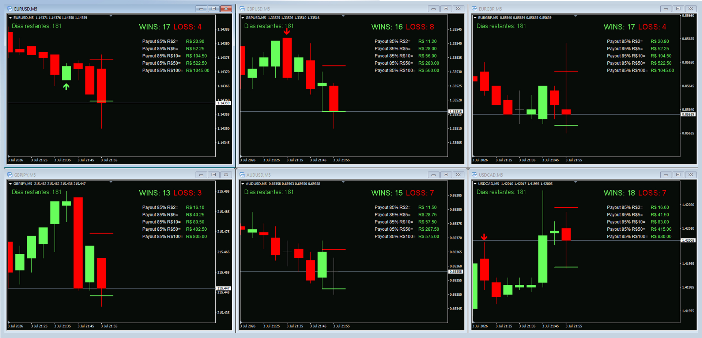

Sinais em ação
Veja os sinais reais no gráfico
Setas de compra e venda plotadas em tempo real, com placar de WINS/LOSS e cálculo de payout automático.

Indicador profissional que identifica pontos de entrada e saída com alta taxa de acerto. Alertas em tempo real, gestão de risco automática e sinais que realmente funcionam.
Setas de compra e venda plotadas em tempo real, com placar de WINS/LOSS e cálculo de payout automático.
6 ativos operados simultaneamente. Zero martingale. Gestão de risco inteligente e lucro consistente no fim da semana.

Gestão de risco real. Nunca dobramos stakes para recuperar perdas.
Forex, índices e pares cruzados operando ao mesmo tempo.
Cada operação registrada no MT4. Você vê antes de acreditar.
Um indicador desenhado por traders profissionais para eliminar ruído e mostrar apenas os setups que importam.
Algoritmo com filtros multi-timeframe para entradas de alta probabilidade.
Notificações push, email e sonoras direto no MT4 assim que o setup aparece.
Funciona em Forex, índices, cripto e metais. Qualquer par, qualquer timeframe.
Stop loss e take profit sugeridos automaticamente com base em volatilidade.
Arquivo .ex4 pronto. Copiou, colou, ativou. Sem configurações complicadas.
Melhorias contínuas do algoritmo incluídas na sua assinatura, para sempre.
Teste 3 dias grátis. Se ganhar dinheiro, continue por R$ 30/mês.
Acesso completo. Sem cartão.
Cancele quando quiser. Sem fidelidade.
Você recebe acesso completo ao indicador por 72h, sem precisar cadastrar cartão. Se gostar, ativa a assinatura de R$ 30/mês. Se não, é só não continuar.
O indicador roda dentro do seu MetaTrader 4. Para receber sinais em tempo real, o MT4 precisa estar aberto — recomendamos usar um VPS de trading.
Sim. Você pode testar em conta demo à vontade, tanto no período grátis quanto durante a assinatura.
Sim. Sem multa, sem fidelidade. Cancela pelo painel e mantém acesso até o fim do período pago.
Em qualquer corretora que ofereça a plataforma MetaTrader 4. XP, Clear, Exness, XM, IC Markets, Pepperstone e outras.
Sim. Grupo exclusivo no Telegram com suporte técnico e atualizações do algoritmo.
Junte-se a milhares de traders que já melhoraram seus resultados.